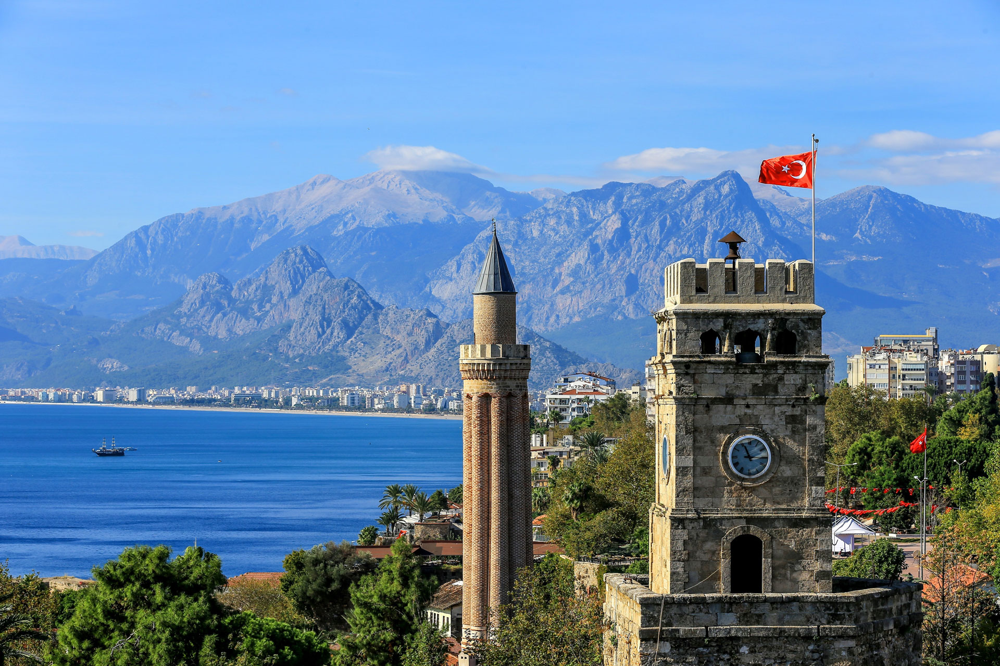

Antalya'nın tam ortasında Muratpaşa ilçe sınırlarında yer alan Kaleiçi (Old Town); Arnavut kaldırımlı dar sokakları, ahşap ve taş mimarili tarihi Osmanlı konakları, Akdeniz koylarına tekne turlarının düzenlendiği küçük yat limanı, onlarca çeşit eğlence mekanı, hediyelik eşya dükkanları ve butik otelleriyle Antalya şehir merkezindeki en popüler turistik yer konumunda. Yivli Minare, Hıdırlık Kulesi, Kesik Minare, Karatay Medresesi ve Şehzade Korkut Camii gibi pek çok tarihi hazineye de ev sahipliği yapan Antalya Kaleiçi’nin tarihi konaklarının restore edilmesi ile hizmete başlayan şık butik oteller ve pansiyonlar, her mevsim turistlerle dolu.
Antalya merkezinden kolayca ulaşabileceğiniz doğa harikalarından biri olan Düden Şelalesi, merkeze sadece 10 kilometre uzaklıktaki Kepez ilçesinde yer alıyor. Halk arasında Düdenbaşı Şelalesi olarak da bilinen Düden Şelalesi; seyir terasları, ahşap yürüyüş yolları, kafeler, restoranlar ve çay bahçeleriyle özellikle yaz aylarında çok popüler bir gezi alanı. 2 kola ayrılan Düden Şelalesi’nin suları 9 kilometre daha devam ederek Antalya'nın falezlerinden 40 metre yükseklikten Akdeniz'e dökülerek muhteşem bir manzara oluşturuyor. Aşağı Düden Şelalesi olarak bilinen bu bölge, Antalya'nın sevilen semtlerinden Lara’da oteller, restoranlar, yürüyüş ve bisiklet yolları arasında yer aldığı için her zaman hareketli. Gezi teknelerinin çok yakınına kadar giderek falezlerden dökülen bembeyaz suları yakından görmenizi sağladığı Aşağı Düden Şelalesi ve Düden Şelalesi'ne Antalya gezinizde mutlaka uğramayı, serin şelale havasında güzel bir gün geçirmeyi unutmayın.